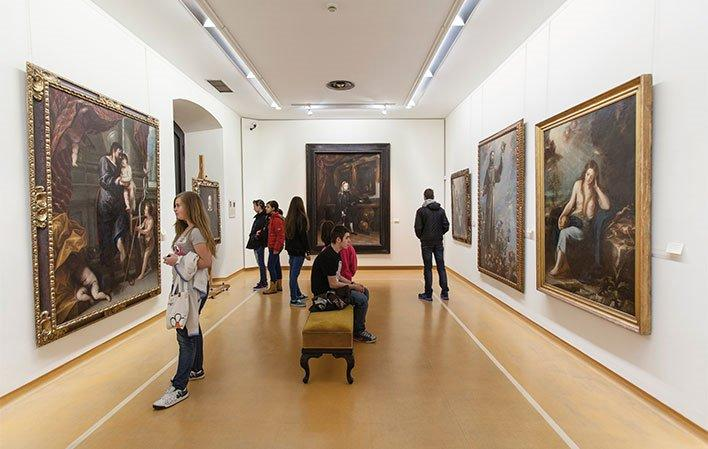
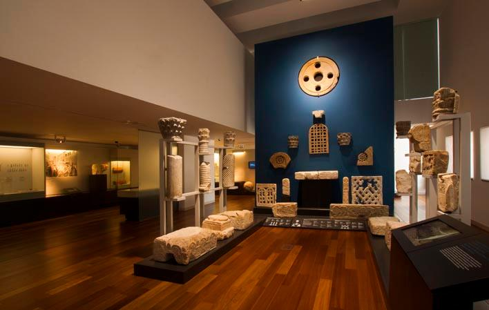

Museo de Bellas Artes de Asturias

El Museo de Bellas Artes de Asturias alberga una colección amplia y cuidada que va desde maestros barrocos y románticos hasta arte contemporáneo, destacando obras de artistas asturianos y españoles que trazan la evolución pictórica y escultórica de la región. Su sede combina salas elegantes y espacios temporales para exposiciones, talleres y actividades culturales, convirtiéndolo en una visita imprescindible para amantes del arte y la historia en el centro de Oviedo.
Museo Arqueológico de Asturias

El Museo Arqueológico de Asturias revela siglos de historia en exposiciones claras y accesibles, desde restos prehistóricos hasta el legado medieval de la región. Perfecto para curiosos y familias, ofrece piezas emblemáticas, audiovisuales didácticos y un recorrido que explica la evolución cultural de Asturias en un espacio céntrico y acogedor.